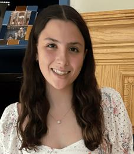

Hi, I am Alexandra Scharpf and appreciate you visting my website. I grew up in Chagrin Falls, Ohio and graduated from Chagrin Falls High School. Currently, I am attending Carnegie Mellon Univeristy and pursuing a degree in Information Systems. At CMU, I am involved in the Varisty Swim Team, Women in IS, and the Emerging Leaders Program.
My academic interests lie at the intersection of technology, management, and problem-solving, and I’m eager to learn how technology can enhance business operations and improve lives. Looking ahead, I’m excited about the opportunities to further explore my passion for both tech and leadership through internships, projects, and professional development.